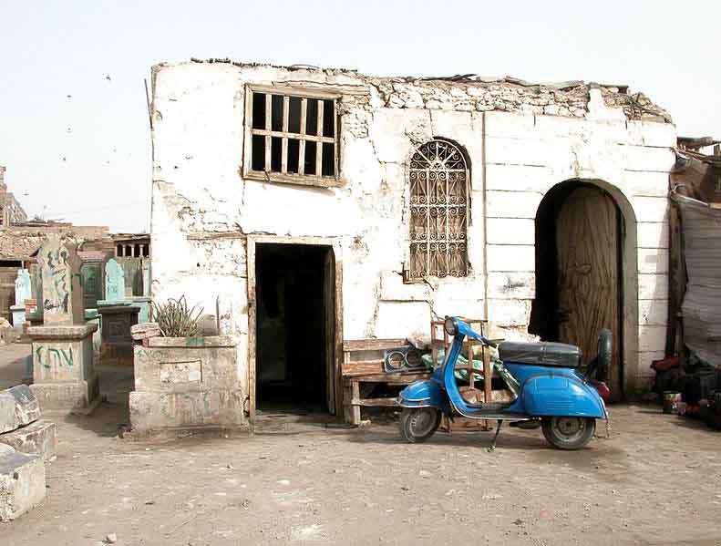
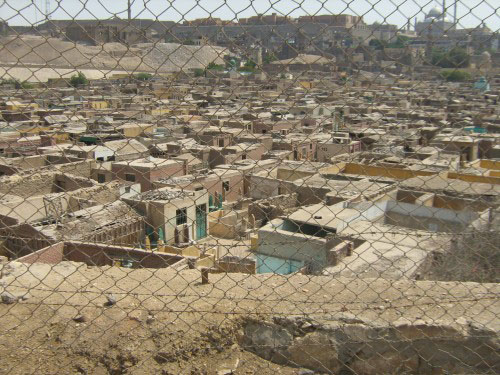
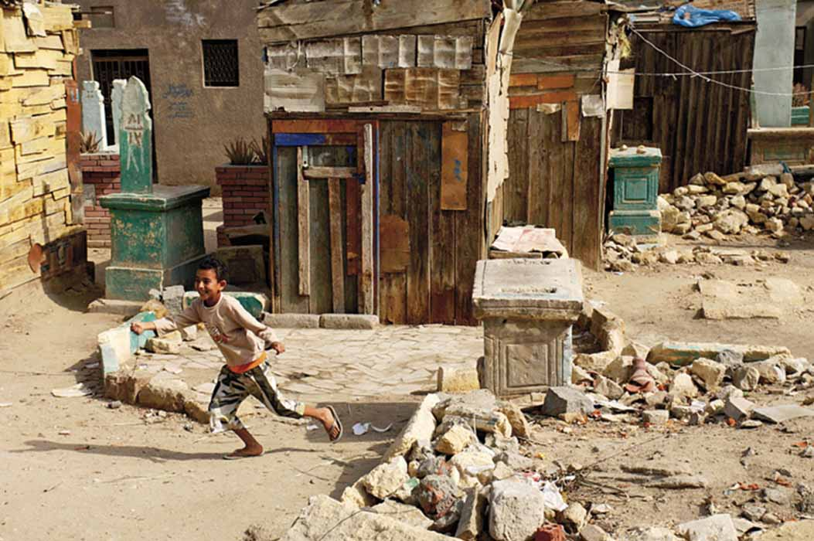
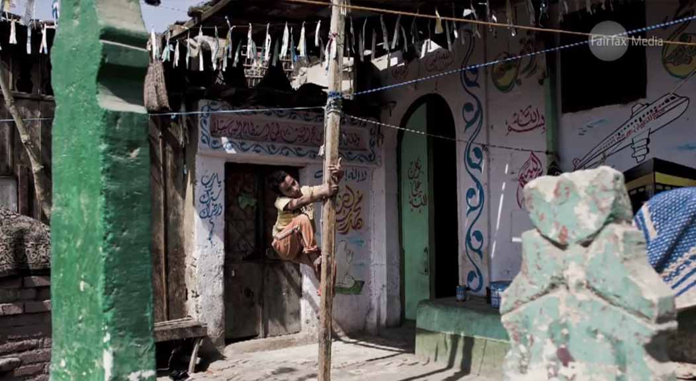

In the mid-1960s Cairo was
overpopulated and some of the poor could not
find shelter. They resorted to the cemetery yards, and used them as
houses, and they lived among the dead.
I was
born in one of these cemetery yards...
Cairo Paris Melbourne
is three novels in one. The original Arabic language novel established
Elsaoud’s literary reputation. Set against the backdrop of Middle
Eastern wars from 1967 to 2003, its Dickensian characters and acute
social concerns assume new poignancy in light of today’s Arab Spring.
Zoheir struggles to escape the poverty of the ‘City of the Dead’.
Ghosts torment his childhood. Family, friends and villains that
populate his world are evoked brilliantly through his young eyes. He
learns of love and brutality quickly. Entering adolescence he yearns
for another place, where he can find his purpose. He secures a visa to
Paris in a comic tour de force, cleverly exposing corruption in Cairo.
In France he is an immigrant worker, travelling with fellow Egyptians
and reading
Hamlet.
He falls for the fascinating and destructive Caroline, holds a forged
passport and is soon on the run from drug dealers in the Algerian
quarter of Paris. Struggling with the chasm between East and West, fate
leads him towards treachery, arrest and, eventually, Melbourne. Living
above a café in Fitzroy, Zoheir descends into meaninglessness, yet
finally finds an unexpected reason for living, one both redemptive and
all consuming.
Cairo is an old man crossing a crowded road. Paris is a pretty girl in
search of a hero. Melbourne is an innocent child playing in a vast
land. Our first person narrator has a naïve knowingness. Zoheir who
becomes known as ‘Prince’ and takes on the persona of Zoheir Oqla, the
inventor of tales, has a touch of Scheherazade about him.
Cairo Paris Melbourne
is a novel of the getting of responsibility
Back
to top
CAIRO
Entrance to the city
Entrance to my life in the city
Life once more
Um Fawzy
Nabila and Aboudi
Rape
Life of Mayada
Mass deaths and a victory without happiness
Moving to the city
Mr Fawzy
The decision 1 - 15
PARIS
Entrance to the city
Entrance to the city 1 - 7
Paris 1
Every cloud has a silver lining
Paris 2
Caroline
Paris 3
The party
Paris 4
The south once more
Paris once again, and for the last time
Warm reception
A sad farewell
No Prophet is honored in his country
MELBOURNE
Entrance to the city
Entrance to my life in the city
A good morning
Bahr
The table
Peter Faulkner
Solene and beautiful Cathy
Bewildered souls
The night of the accident 1 - 4
No peace no war 1 - 3
Fishermen in dirty water 1 - 6
The good omen 1 - 3
The last game
A beginning and an end 1 - 4
Back
to top
Previously
published in Arabic
Back
to top
The City of
the Dead suburb in Cairo, which incorporates the city's cemetaries,
features in the opening book of
Cairo
Paris Melbourne and was the subject of a
Sydney Morning Herald
article:




Reviews
New Australian Fiction
Ed Wright
The Weekend Australian,
9 June 2012
Now
based in Melbourne, Maher Abou Elsaoud has successfully published
novels in Arabic and was recently in Egypt for the filming of one,
until it was disrupted by the Arab Spring. The picaresque
Cairo Paris Melbourne
is the third book in his opus and the first to be translated into
English.
It
follows a young Egyptian, Abou Zoheir, from his poor but fascinating
beginnings in a neighbourhood improvised from a cemetery on the
outskirts of Cairo, to a life as a fruit picker, lover and theatre
student in France, then as an inhabitant of the Fitzroy demi-monde in
Melbourne.
Elsaoud captures the characters of Zoheir’s childhood
neighbourhood with humour and humanity. Characters such as Um Fawzy,
the large beautiful kind woman, known to the neighbourhood as ‘the
mattress of tenderness’, resonate in the mind long after the reading,
as does Zoheir’s scamming but funny father. Although his own childhood
has its tragedies, Zoheir shows a great sense for the neighbourhood
gossip and the various tales that compose this section of the novel are
arguably its highlight.
The France section is more a road novel,
a young naturally gifted man throwing himself at the mercy of life and
being variously rewarded. Its open depiction of young men in thrall to
their libidos and the rigidity of testosterone-driven idealism is oddly
refreshing. It also captures beautifully that sense of the unlimited
horizons of youth coming into conflict with established hierarchies of
society.
Readers will be reminded of Saul Bellow’s
The
Adventures of Augie March..., Kerouac’s
On the Road, or the
novels of Norwegian
author Agnar Mykle.
It is treachery that forces Zoheir to leave
France and love that leads him to Melbourne. But by the time we meet
him there in his late 30s things have gone pear-shaped and
disillusionment has set in. He is living in a single room above a café
in Fitzroy, where he keeps company with a cast of misfits including an
alcoholic ex-diplomat, a prostitute who dreams of love, a Serbian
gambler, the Italian café owner, a stingy Chinese grocer, an impotent
PhD student and another unrecognised novelist.
It’s a reminder
that true bohemias are not so much places of youthful transition as
places where people congregate as a salve for the failures of their
lives and their estrangement from the mainstream. While Zoheir’s
rhetoric of disillusionment at times becomes a bit monotonous (pride
can be very tedious), this is rescued by the fascinating character
sketches and life logics of the people who surround him.
Back
to top
Flying by the seat your pants
Anna Couani (writer and poet)
Rochford Street Review,
12 June 2012
It
is an interesting fact that, while Australian writers festivals and
other public literary events and programs showcase and celebrate the
work of writers from other countries, there is little exposure given to
Australian writers writing in languages other than English. So
Cairo Paris Melbourne,
a translation of a novel by an Egyptian Australian writer who writes in
Arabic, is a welcome addition by Black Pepper Publishing to the
Australian literary landscape.
Maher Abou Elsaoud has had works
published in Arabic in Egypt and speaks English, French and Arabic,
having lived in Egypt, France and Australia. His knowledge of those
countries has provided him with the settings for this novel. He writes
primarily in his mother tongue and with this book, worked on the
English translation with his translator, Ahmed Fathy who lives in
Egypt. So especially now that both travel and communication are easy
and accessible, writers like Elsaoud can maintain and capitalise on
links with their country of origin. Very different from the migrant
writers of a generation ago who felt isolated and cut off and were
barely recognised in their adopted country.
Cairo Paris Melbourne
has a first person narrator in a kind of English that retains traces of
its origins. In some ways it reads like an autobiography although it is
fictional. The structure of the novel, the absence of big chunks of
time in the narrator’s life, is evidence of that. Elsaoud has studied
film and written film scripts and the cuts are certainly understandable
in filmic terms. It traces parts of the narrator’s life journey across
30 years, starting with an innocent childhood, along with hair-raising
experiences as an eavesdropper, then through myriad difficulties as a
transient worker and culminating in a cynical adulthood in Melbourne.
There is however, an unexpected redemption at the end of the book which
gives the narrative a satisfying closure.
Most Australians have
had the experience of being tourists in foreign countries and have even
roughed it a bit. However, the experience of a poor kid from Cairo as a
traveller, flying by the seat of his pants without money, no parents
wiring cash to the nearest American Express, is altogether another and
very brutal world. It has the kind of adventurous and optimistic spirit
you find in Slumdog Millionaire but without the Bollywood gloss or the
happy ending. Similar is the close bond between the male friends and
their generosity and kindness towards each other.
The young
eavesdropper in the Cairo section of the book has warm and loving
connections with older females but also witnesses monstrous incidents
involving the abuse of women amongst the street people and this, along
with the ubiquitous corruption, seems to partly explain his desire to
get out of Egypt. He is idealistic, believing that opportunities and a
better society await in other places. However, the character is
eventually ground down by unjust and unfair circumstances. As well,
while he can see the injustice of the treatment of women in Cairo, he
finds he doesn’t have the tools to cope with Western gender relations
in a way that can bring him happiness. The character insulates himself
from the consuming, controlling, heartbreaking behaviour of the Western
women he encounters by becoming a Don Juan and hanging out with the
other disillusioned bachelors in a Fitzroy coffee shop.
It is
personal relationships that are in the foreground of this novel, not
the places, as might be suggested by the title of the book. The
relationships are depicted from a masculinist perspective that I found
a bit grating. However, the book is interesting to read, the plot is
not predictable and many of the characters are intriguing and lovable.
Back
to top
Elsaoud
biography